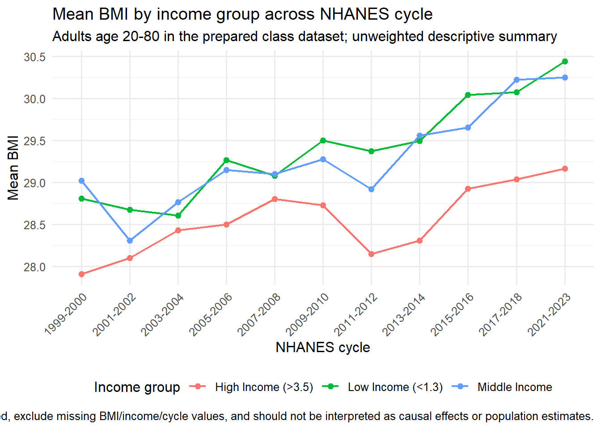

library(readr)
library(dplyr)
library(ggplot2)
candidate_paths <- c(
"examples/nhanes-equity/data/nhanes_equity_v6.csv",
"../../examples/nhanes-equity/data/nhanes_equity_v6.csv"
)
data_path <- candidate_paths[file.exists(candidate_paths)][1]
if (is.na(data_path)) {
stop("Could not find examples/nhanes-equity/data/nhanes_equity_v6.csv")
}
nhanes <- read_csv(data_path, show_col_types = FALSE)Worked Example: Descriptive BMI Visualization
Goal
This worked example uses the NHANES Health Equity CSV snapshot to build one descriptive visualization. The plot summarizes mean BMI by income group across NHANES cycle. It is unweighted and should be interpreted as a classroom visualization exercise, not a population estimate.
Prepare a Descriptive Summary
Keep the summary intentionally simple. We are describing the prepared class dataset, not estimating a national trend.
Plot
bmi_plot <- ggplot(
bmi_by_income_cycle,
aes(x = Cycle, y = mean_bmi, color = IncomeGroup, group = IncomeGroup)
) +
geom_line(linewidth = 0.8) +
geom_point(size = 2) +
labs(
title = "Mean BMI by income group across NHANES cycle",
subtitle = "Adults age 20-80 in the prepared class dataset; unweighted descriptive summary",
x = "NHANES cycle",
y = "Mean BMI",
color = "Income group",
caption = "Caption template: Mean BMI is summarized descriptively from the cached class dataset. Values are unweighted, exclude missing BMI/income/cycle values, and should not be interpreted as causal effects or population estimates."
) +
theme_minimal(base_size = 12) +
theme(
axis.text.x = element_text(angle = 45, hjust = 1),
legend.position = "bottom"
)
bmi_plot
Optional Plotly Check
The core assignment uses the static ggplot2 figure above. If plotly is installed, you can preview the same plot interactively while checking labels and tooltips. This extension is optional because static Quarto output is the supported submission path.
Caption Template
Use this structure when revising your own plot:
This figure shows [measure] by [group] across [time/category] using the prepared NHANES Health Equity classroom dataset. The summary is descriptive and unweighted. Records with missing [variables] were excluded. The plot supports comparison of patterns, not causal claims or population-level estimates.
Mini Visual Audit Checklist
- Does the title describe what is plotted without overstating the claim?
- Is it clear whether the statistic is weighted or unweighted?
- Are axes, groups, and units labeled plainly?
- Are missing values or exclusions disclosed?
- Is the scale chosen to support honest comparison rather than exaggeration?
- Does the caption state the limitation that this is descriptive, not causal?